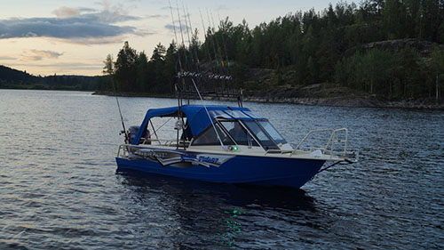

Катер Berkut L-Jacket Fisher (Беркут L-Jacket Fisher)
Бросить якорь в вашей любимой бухте, и наслаждаться удобством ловли рыбы с носа, или кормы вашего катера, что еще нужно для счастья рыболову. Модификация «Беркут L-Jacket Fisher» — это многофункциональный рабочий рыбацкий катер с повышенной грузоподъемностью, которая составляет до 600 кг. В этой модели все подчинено занятию, как ловля рыбы, даже чуть-чуть в ущерб комфорту. И если теснота городских улиц и духота офисов вам уже порядком надоели, можете попробовать примерить капитанскую фуражку — уже многим она пришлась впору!
Новинка — с этого слова мы начнем описание этого катера. Производители катера сделали его после того как в быт вошло такое понятие как «импортозамещение», т. е. убрали много импортных материалов (пластмасс) и заменили их алюминием. В результате катер получился намного прочнее и надежнее. Катер «Беркут L-Jacket Fisher» — имеет главную особенность (фишку). Это самоотливной носовой кокпит, с установленным врезным палубным основанием, куда можно быстро перенести кресло, позволяющий сохранить, чистоту салона, во время рыбной ловли. По бокам два леера, с высокими поручнями. Основой корпуса взят корпус «L-Jacket». Ветровое стекло имеет открываемую среднюю секцию для комфортного выхода на нос. Остекление (триплекс) набрано в неширокой рамке, которая не мешает видимому пространству. Передняя панель разделена на 2 консоли, выполненные из металла. Они имеют достаточно места для приборов, навигации и прочего оборудования. В кокпите по желанию можно разместить два или четыре кресла на поворотных стойках — два в первом ряду и два сзади. Или же два кресла, а замыкать обитаемое пространство будет кормовой диван с хозяйственным рундуком. Также можно добавить рундуки вдоль бортов.
Технические характеристики катера:
| Параметр | Berkut L-Jacket Fisher |
|
Длина корпуса |
5,1 м |
|
Габаритная длина |
5,65 м |
|
Максимальная ширина |
2.05 м |
|
Высота борта на миделе |
0.91 м |
|
Минимальная высота |
0.45 м |
|
Килеватость на транце |
18° |
|
Грузоподъемность (с учетом мотора) |
600 кг |
|
Пассажировместимость |
6 чел |
|
Сухой вес |
430 кг |
|
Высота стандартного транца |
0,51 м |
|
Рекоменд. мощность мотора |
70 - 115 л.с. |
|
Толщина днища |
4 мм |
|
Толщина борта |
3 мм |
|
Максимальная масса мотора |
190 кг |
|
Расчетная высота волны |
0,8 м |
Стандартное оборудование:
- Сварной, запененный корпус;
- Пайолы из ламинированой фанеры с резиновой окантовкой;
- Порошковая покраска корпуса цветом RAL 9007;
- Остекление (Триплекс);
- Электроподготовка(Предохранители, проводка, ключ массы, клемы АКБ, площадка крепления АКБ);
- Низкие носовые леера;
- Площадка для крепления датчика эхолота;
- Комплект рулевого управления (Штурвал пластик, редуктор, штуртрос);
- Стационарный вварной алюминиевый бак на 100 литров с датчиком уровня топлива производства США;
- Электрическая осушительная помпа, 1500 галлонов/час.;
- Два больших бардачка в кормовой части;
- Малый бардачок у пассажира слева;
- Доптранец;
- Трап сварной "Беркут";
- Опциональная площадка под роульс;
- Леерное ограждение кокпита;
- Вспомогательная ступенька под носовым криналином;
- Вварной держатель для наживки на дверце между консолями;
- Пластиковая ручка в консоли пассажира;
- Розетка прикуривателя в блоке кнопок;
- Пластиковые петли крепления крышек и дверей;
- Блок кнопок (3 клавиши с прикуривателем);
- 2 пластиковых подстаканника в ступеньке;
- Капитанское поворотное на фирменной стойке кресло капитана;
- Капитанское на фирменной стойке кресло пассажира;
- Комбинированный ходовой, кормовой, топовый ходовые огни;
- Опциональное оснащение кормовой части кокпита;
- Открытый вещевой ящик в консоли пассажира;
- Опциональный маридек на пайолах;
- Опциональные мягкие накладки на короба бортов;
- Опциональный откидной столик;
- Опциональный звуковой сигнал;
- Алюминиевый сварной ящик для спиннингов между консолей;
- Пластиковая кормовая заглушка трюмной помпы;
- Кормовые площадки на транце;
- Закладная под стойку буксировки лыжника;
Межнаборное пространство заполняется полиуретановыми блоками плавучести общим объемом около 600 литров. Это обеспечивает положительную плавучесть, шумоизоляцию и прочность, т. е. при заполнении катера забортной водой, он останется на плаву и не утонет. Бортовая линия усилена привальным брусом. В неподвижном состоянии, катер очень устойчив и не дает повода для сомнений, даже при внушительных волнах за бортом. Легко идет по воде (выходит на глиссер), хорошо входит в повороты, не заваливается и хорошо держит курс. Мягко и без ударов проходит гребни волн, даже на полном ходу.
Фотографии катера
- 
- ;
{kind=link}
{kind=link}
{kind=link}
{kind=link}
{kind=link}
{kind=link}
{kind=link}
{kind=link}
{kind=link}